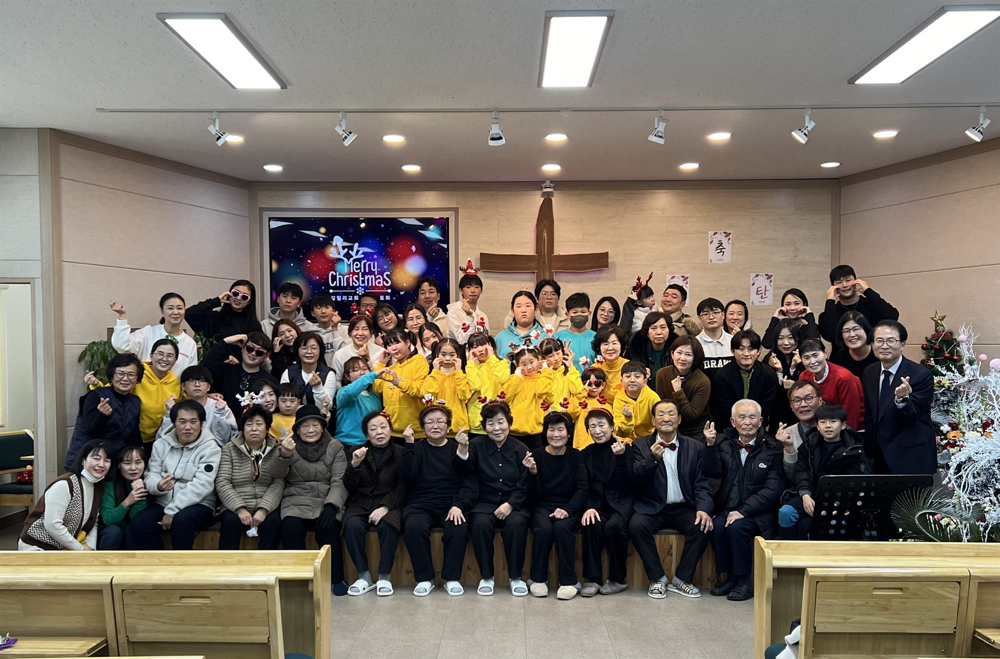

“수고하고 무거운 짐 진 자들아 다 내게로 오라” — 마태복음 11:28
누구에게나 문이 열려 있는밝고 따뜻한 환대의 공동체입니다.
예수님이 사역을 시작하신 갈릴리처럼,삶의 회복이 시작되는 곳.
갈릴리교회는 화려함보다 진실함을, 형식보다 사람을 먼저 생각하는 춘천의 작은 교회입니다. 처음 오신 분도 편안하게 예배드리고, 서로의 짐을 나누며 함께 자라갑니다.
처음 오시는 분은 주일 대예배에 오시면 가장 좋습니다.
갈릴리교회가 함께 부르는 찬양입니다. 아래에서 들어보세요.
🎵 우하단의 배경음악 버튼을 누르면 첫 번째 곡이 잔잔하게 흐릅니다.
혼자 오셔도 괜찮습니다. 밝은 얼굴로 반갑게 맞이하겠습니다.